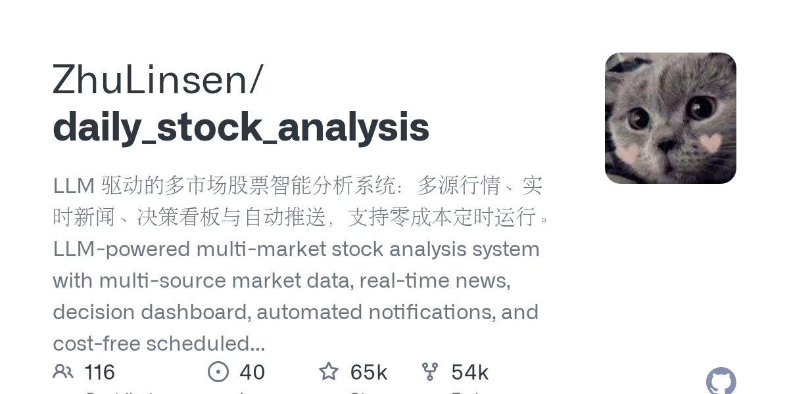

02 GitHub
ZhuLinsen/daily_stock_analysis
퇴근 뒤 자동으로 도는 주식 분석 리포트
★ 64,693PythonMIT 사내 사용 가능릴리스 v3.32.0 (09.06)최근 활동 09.06테스트 있음예제 없음AGENTS.md 있음

이 저장소는 주식 분석 자동화에 초점을 맞췄다. 여러 시장의 시세와 뉴스, 공시 성격 정보를 모아 AI가 요약 보고서를 만든다. 결과는 웹 화면에서 보거나 메신저와 이메일로 밀어 넣을 수 있다. 이번 릴리스에서는 웹·API·봇·CLI에서 분석을 시작할 수 있게 범위를 넓혔다.
무엇을 하는 물건인가
이 저장소는 AI가 종목 분석 보고서를 만들고 정해진 시간에 보내 주는 시스템이다. A주, 홍콩, 미국, 일본, 한국, 대만 주식과 ETF까지 묶어 다룬다. 사람이 장 마감 뒤 자료를 모으고 코멘트를 붙여 배포하던 일을, 야간 당직자가 체크리스트에 맞춰 정리해 보내는 방식으로 바꾼 셈이다. 웹 화면에서는 수동 분석과 과거 보고서 조회도 할 수 있다.
스펙과 도입 조건
- 언어는 Python이다.
- 설치 형태는 GitHub Actions 실행, 로컬 실행, Docker 배포, FastAPI 서비스, 데스크톱 패키징을 지원한다.
- 의존 서비스는 최소 1개의 AI 모델 API Key가 필요하다. 알림 채널도 최소 1개 설정해야 하며, 뉴스 품질을 높이려면 검색 서비스 설정을 권한다.
- 라이선스는 MIT다.
- 성숙도는 v3.32.0 릴리스가 있고, 릴리스 노트와 변경 이력을 공개한다.
이럴 때 쓰면 좋다
- 자산운용 지원팀이 매 영업일 장 마감 뒤 관심 종목 점검표를 자동으로 받아 아침 회의 자료를 준비할 때 유용하다.
- 고객 상담 조직이 시장 급등락 때 주요 지수와 종목 리스크 요약을 메신저로 받아 문의 대응 우선순위를 정할 때 쓸 수 있다.
- 디지털 채널 팀이 규칙 기반 알림 대신 AI 요약 보고서를 붙여 임원용 시장 브리핑 메일을 자동 발송할 때 적합하다.
핵심 기능
- 여러 시장의 시세, K선, 기술 지표, 뉴스, 공시, 기본면 데이터를 모아 AI 의사결정 보고서를 만든다.
- GitHub Actions, Docker, 로컬 스케줄, FastAPI, 메신저·이메일 푸시로 자동 실행과 배포를 지원한다.
- 웹 작업대에서 설정 관리, 작업 모니터링, 수동 분석, 과거 보고서, 백테스트, 보유 포지션 관리, Agent 질의를 제공한다.
이번 릴리스에서 바뀐 점
v3.32.0은 A주 지수 분석 입구를 Web, API, Bot, CLI, GitHub Actions 전반으로 넓혔다. 등록 항목은 33개로 늘렸고, 지수 식별 체계와 중복 작업 처리, 이력과 채팅 문맥을 맞췄다. 개별 종목 연구 집계 API와 구조화된 연구 산출물도 새로 넣었다. 스케줄 분석은 독립 프로세스와 강제 시간 제한을 적용했고, Tavily 검색은 credit 소모를 줄이려고 basic 검색으로 바꿨다.
사내 도입 체크
- 외부 AI API Key가 필요하다. 종목명, 질문 내용, 분석 요청이 외부 모델로 나갈 수 있어 데이터 반출 범위를 따져야 한다.
- 무료 시세 데이터원은 호출 제한과 인터페이스 변경, 네트워크 변동의 영향을 받는다고 적었다. 업무용이면 유료 데이터원 검토가 필요하다.
- 유지보수 주체는 ZhuLinsen 개인 계정이다.
- 상용 알림·시장분석 서비스와 겹치는 영역이 있다. 다만 GitHub Actions 기반 무서버 정시 실행은 저비용 대안으로 볼 수 있다.
주요 용어
원문 정보
제목: ZhuLinsen/daily_stock_analysis
최근 활동: 2026.09.06